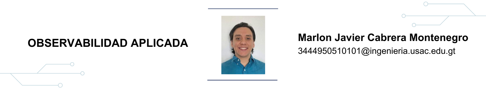

10 Observabilidad aplicada

10.1 Resumen
La observabilidad se refiere a la habilidad de entender el estado interno de un sistema basado en sus salidas externas. En el ámbito del software esta se vuelve crucial, ya que los sistemas más complejos están basados en muchos microservicios que se ejecutan uno sobre el otro. A diferencia del monitore, que se centra en métricas, la observabilidad proporciona una comprensión del funcionamiento del sistema. Las herramientas como el telemetry son esenciales para su implementación efectiva. Un ejemplo de éxito en la aplicación de observabilidad es el uso por parte de Tesla para ofrecer seguros basados en el comportamiento en tiempo de real de sus conductores.
10.2 Abstract
Observability refers to the ability to discern the internal state of a system from its external outputs. This becomes a crucial tool in software, especially for complex systems that are mostly based on microservices. Unlike mere monitoring, which focuses on metrics, observability provides a deeper understanding of a system. Tools such as telemetry are pivotal for its effectiveness. A notable application of observability is Tesla’s use of it to offer insurances based on real-time driving behavior.
10.3 Palabras claves
Observabilidad, software, microservicios, herramientas, métricas, monitoreo, telemetry, datos, toma de decisiones, análisis.
10.4 Introducción
En el mundo actual, en el que la tecnología y el software juegan un papel importante en diversos sistemas, la capacidad de entender y analizar estos sistemas es esencial para garantizar su correcto funcionamiento y optimización. En este contexto, emerge la observabilidad, una capacidad que no solo brinda información sobre un sistema, sino que también permite una comprensión de su funcionamiento.
10.5 Artículo
La observabilidad es el término utilizado para referirse a la capacidad de entender el estado interno de un sistema a partir de sus salidas externas. En un contexto de software, la observabilidad es esencial para monitorear y diagnosticar los sistemas más complejos o específicos como los microservicios.
La observabilidad aplicada es una característica que se refiere a la práctica y aplicación de herramientas, metodologías y procesos para obtener una comprensión del comportamiento, rendimiento y salud de un sistema. Se debe tener claro que esta observabilidad aplicada se auxilia de los datos obtenidos de un sistema, por lo que no se basa en intenciones, promesas, obligaciones o expectativas, sino en resultados obtenidos de acciones confirmadas y por lo tanto es una fuente de información basada en evidencias. De esta manera, al planificar estratégicamente y ser ejecutada satisfactoriamente, la observabilidad aplicada puede ser un enfoque importante para la toma de decisiones basada en datos.
Una diferencia que se debe tomar en cuenta es la de observabilidad y monitoreo. Mientras el monitoreo también se refiere a las métricas obtenidas en un sistema para detectar anomalías, la observabilidad va más allá del monitoreo y no solo obtiene las métricas, sino que ayuda a entender cómo está funcionando realmente un sistema. Su objetivo va más allá de meramente obtener datos, y en cambio, trata de entender al sistema y actuar con base en la comprensión obtenida del mismo.
Para la correcta implementación de la observabilidad se puede hacer uso de varias herramientas como el telemetry, que ofrece contexto sobre el sistema, provee los datos necesarios para el análisis y permite la realización de un monitoreo efectivo y resolución de problemas.
Un caso de éxito de observabilidad aplicada es el uso de datos observables por Tesla para ofrecer seguros basados únicamente en el comportamiento en tiempo de real de acuerdo con la conducta de los clientes. Al contar con varios sensores y requerir una conexión, esta compañía fue capaz de analizar profundamente el comportamiento de cada conductor.
Se estima que los conductores pudieron ahorrar del 20 al 40 % en su prima vehicular.
10.6 Conclusiones
La observabilidad se ha consolidado como una herramienta esencial en el ámbito del software, superando la simple recopilación de métricas. Su aplicación no solo asegura una comprensión de los sistemas, sino que también permite adaptar y mejorar servicios basados en evidencias claras.
10.7 Referencias
[1] Kidd, C. (2023). Monitoring, Observability & Telemetry: Everything You Need to Know for Observable Work. https://www.splunk.com
[2] Perri, L. (2022). Monetizing Observable Data Will Separate the Winners and Losers. https://www.gartner.com
[3] Núñez, V. (2023). ¿Cómo se relacionan las innovaciones tecnológicas con la competitividad de tus negocios? https://vilmanunez.com